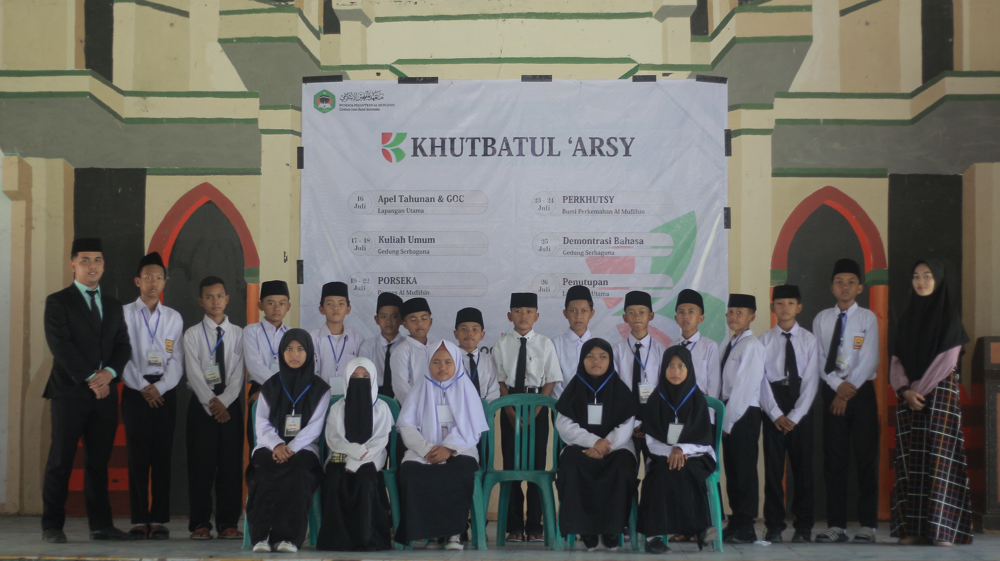

Pendidikan Pondok Modern Darussalam Gontor menekankan pada pembentukan pribadi mukmin muslim yang berbudi tinggi, berbadan sehat, berpengetahuan luas dan berpikiran bebas. Kriteria atau sifat-sifat utama ini merupakan moto pendidikan di Pondok Modern Darussalam Gontor.
Berbudi tinggi merupakan landasan paling utama yang ditanamkan oleh Pondok ini kepada seluruh santrinya dalam semua tingkatan; dari yang paling rendah sampai yang paling tinggi. Realisasi penanaman moto ini dilakukan melalui seluruh unsur pendidikan yang ada.
Tubuh yang sehat adalah sisi lain yang dianggap penting dalam pendidikan di Pondok ini. Dengan tubuh yang sehat para santri akan dapat melaksanakan tugas hidup dan beribadah dengan sebaik-baiknya. Pemeliharaan kesehatan dilakukan melalui berbagai kegiatan olahraga, dan bahkan ada olahraga rutin yang wajib diikuti oleh seluruh santri sesuai dengan jadwal yang telah ditetapkan.
Para santri di Pondok ini dididik melalui proses yang telah dirancang secara sistematik untuk dapat memperluas wawasan dan pengetahuan mereka. Santri tidak hanya diajari pengetahuan, lebih dari itu mereka diajari cara belajar yang dapat digunakan untuk membuka gudang pengetahuan. Kyai sering berpesan bahwa pengetahuan itu luas, tidak terbatas, tetapi tidak boleh terlepas dari berbudi tinggi, sehingga seseorang itu tahu untuk apa ia belajar serta tahu prinsip untuk apa ia manambah ilmu.
Berpikiran bebas tidaklah berarti bebas sebebas-bebasnya (liberal). Kebebasan di sini tidak boleh menghilangkan prinsip, teristimewa prinsip sebagai muslim mukmin. Justru kebebasan di sini merupakan lambang kematangan dan kedewasaan dari hasil pendidikan yang telah diterangi petunjuk ilahi (hidayatullah). Moto ini ditanamkan sesudah santri memiliki budi tinggi atau budi luhur dan sesudah ia berpengetahuan luas.